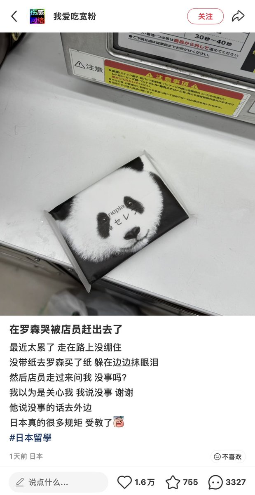

日落龙舌兰🏳️⚧️🏴 🚷
@0rbital_obit
疫情的时候蒙特利尔有人地铁站手机被抢了，跑去找工作人员，一路推诿责任 踢皮球到了站长。站长拒绝沟通，对受害者说：“你情绪太崩溃了，我不听你说的，你去那边的墙角面壁思过半个小时再来找我。”半个小时后找到站长，盗贼早跑没影了，虽然半小时前也不可能抓到，但是这种Karen的态度是普遍的且没有任何处罚

曾颖
@zengying1107
小红书热帖：
在罗森哭被店员赶出去了😂
真的很日本。 https://t.co/H3kwA2PR5i